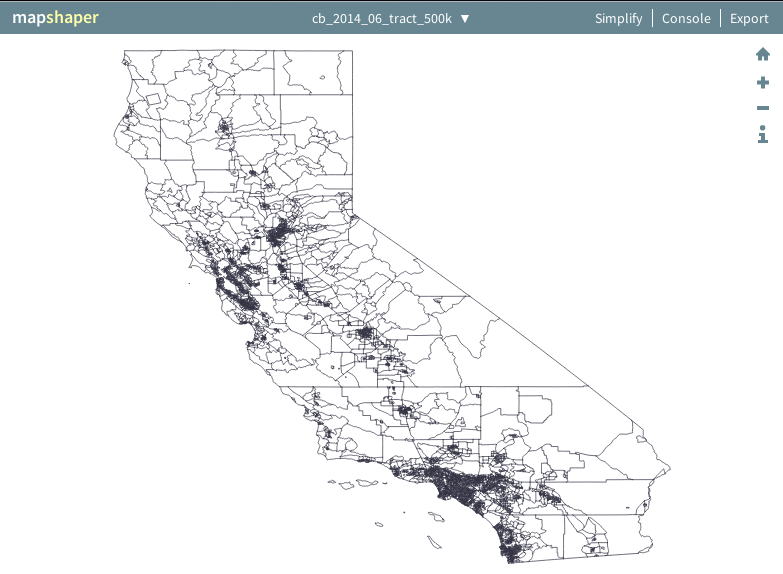
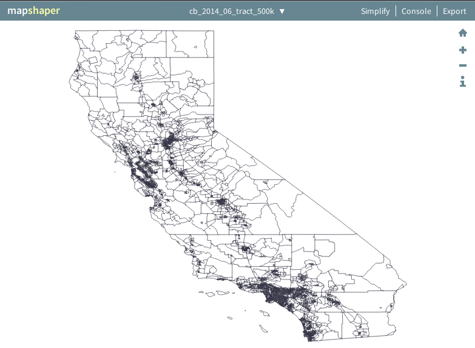

NOTE** Do these in Linux, tools are better
Command-Line Cartography, Part 1...
Choose a few parameters:
A metric (e.g., population density)
Check the map out. Go to mapshaper.org and upload the cb_2014_06_tract_500k.shp shape file to see what you have.

Convert shape files to GeoJSON: a web-friendly, human-readable format.
Apply a geographic projection to the json file. Its more efficient than doing it at run-time.
Preview the projected geometry, use d3-geo-projection’s geo2svg:
- A metric (e.g., population density)
- A geographic entity (e.g., census tract)
- source (e.g., ACS 2014 5-year estimate)
$ curl 'http://www2.census.gov/geo/tiger/GENZ2014/shp/cb_2014_06_tract_500k.zip' -o cb_2014_06_tract_500k.zip
$ unzip -o cb_2014_06_tract_500k.zip
Archive: cb_2014_06_tract_500k.zip
inflating: cb_2014_06_tract_500k.shp.ea.iso.xml
inflating: cb_2014_06_tract_500k.shp.iso.xml
inflating: cb_2014_06_tract_500k.shp.xml
inflating: cb_2014_06_tract_500k.shp
inflating: cb_2014_06_tract_500k.shx
inflating: cb_2014_06_tract_500k.dbf
inflating: cb_2014_06_tract_500k.prj
extracting: cb_2014_06_tract_500k.cpg
Check the map out. Go to mapshaper.org and upload the cb_2014_06_tract_500k.shp shape file to see what you have.

Convert shape files to GeoJSON: a web-friendly, human-readable format.
$ shp2json cb_2014_06_tract_500k.shp -o ca.json
Apply a geographic projection to the json file. Its more efficient than doing it at run-time.
$ geoproject 'd3.geoConicEqualArea().parallels([34, 40.5]).rotate([120, 0]).fitSize([960, 960], d)' < ca.json > ca-albers.json
Preview the projected geometry, use d3-geo-projection’s geo2svg:
$ geo2svg -w 960 -h 960 < ca-albers.json > ca-albers.svg